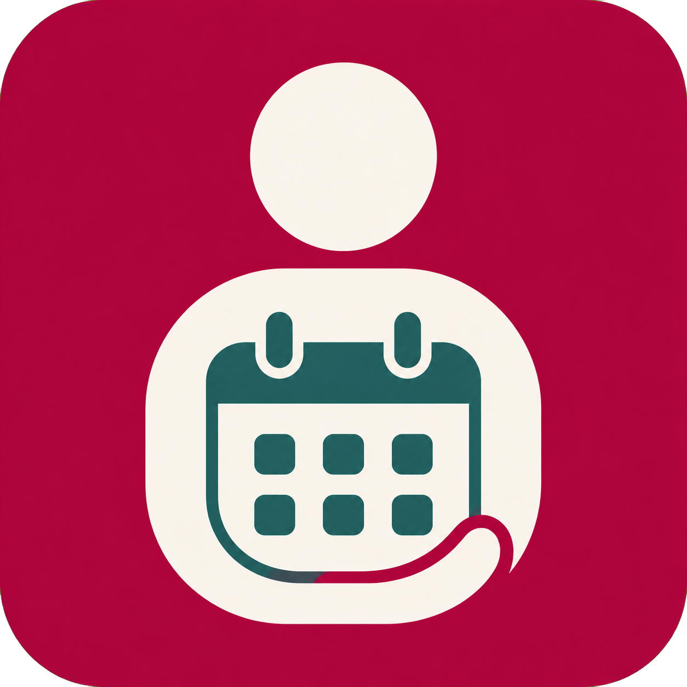
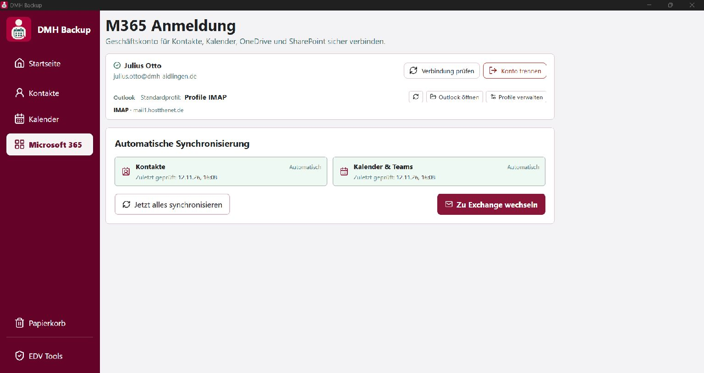

Schritt 1
Microsoft 365 verbinden
In DMH Backup links „Microsoft 365“ öffnen. Danach „Mit Microsoft 365 verbinden“ wählen.

DMH MigrationKurzanleitung
In DMH Backup links „Microsoft 365“ öffnen. Danach „Mit Microsoft 365 verbinden“ wählen.
Speichern Sie offene Arbeiten in Outlook. Klicken Sie anschließend auf „Zu Exchange wechseln“.
Wenn die Anzeige wie im folgenden Bild aussieht, wurde die Umstellung erfolgreich abgeschlossen. Wählen Sie danach „Outlook öffnen“.